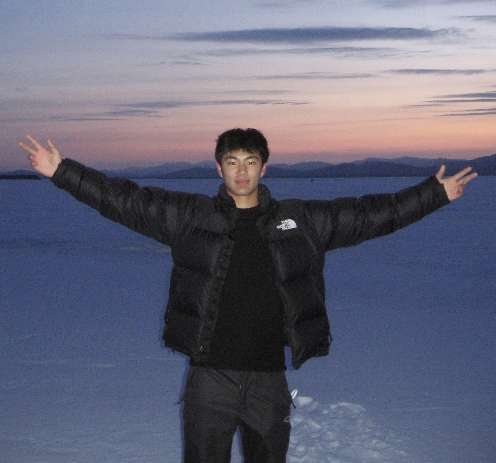
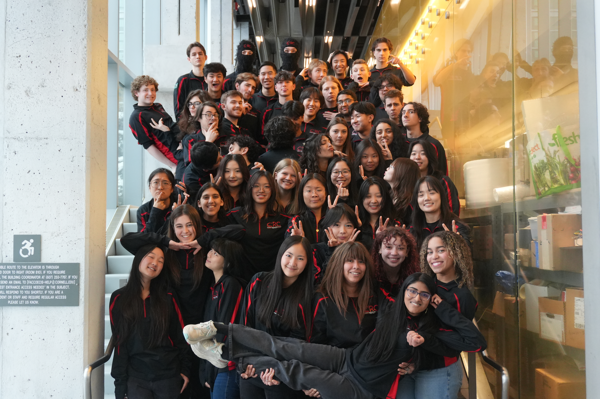

About Me
Hello, my name is Gavin Lim. I was born in Singapore and grew up in Jakarta, Indonesia. I am currently a student at Cornell University pursuing a B.A. in Computer Science with a minor in Mechanical Engineering. I’m especially interested in robotics, autonomous systems, and hardware that lives at the intersection of software and physical design. At Cornell, I am involved in Combat Robotics (CRC), where I design and fabricate competitive battlebots. I’ve worked on mechanical subsystems for a 3 lb full-body spinner, refined chassis geometry using Fusion 360, and contributed to a vision-based human–battlebot teleoperation system using YOLO pose estimation.
Beyond robotics, I’m deeply interested in performance machines — especially trophy trucks. I’m fascinated by how suspension geometry, power delivery, and control systems enable vehicles to survive extreme terrain at high speeds. I also love playing the acoustic guitar — especially John Mayer’s live playing — and have spent years learning fingerstyle and blues progressions.
I also love music — I enjoy singing and I’m a member of UNMUTE Musicians, where I create music videos. I play a variety of styles, from classical piano to country guitar, often singing while accompanying myself. Outside of academics, I play basketball regularly and train consistently in the gym.


Resume Preview
If the preview doesn’t load, you can open the PDF.